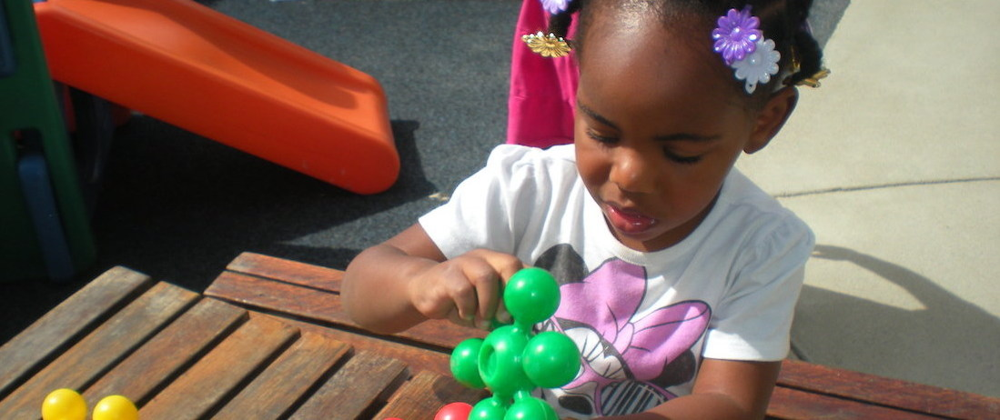
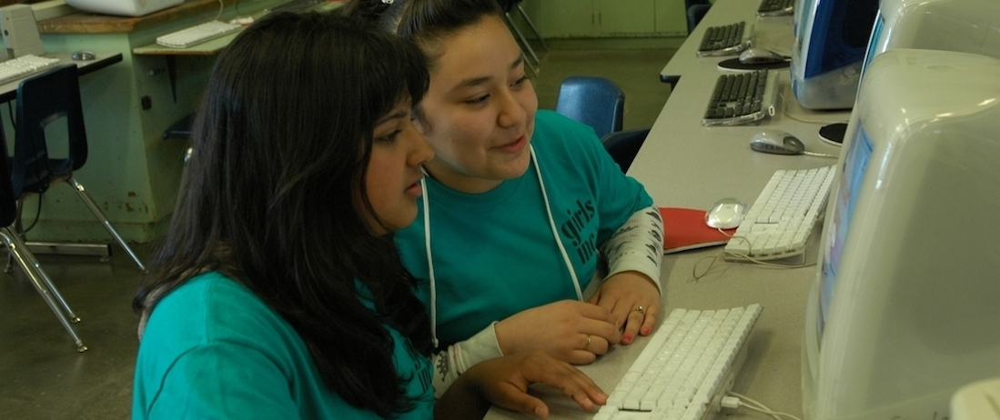

-
BORP: Launching a new boys wheelchair basketball league.
-

St. Vincent's: Devoloping an innovative new charter school model in West Oakland.
-

3-Dimensional Art: 3D art program for Oakland's public schools.
-

Girls Inc.: Girls afterschool literacy and enrichment program.
Our Mission
The Barrios Trust provides financial assistance to non-profit organizations, and individuals in support of high quality educational and developmental experiences for economically disadvantaged young people.
Founded in Oakland in 1999, The Barrios Trust (TBT) provides support in the form of grants to youth-centered programs within our community. We focus on programs that encourage healthy habits of mind and body, nourish cultural diversity and educate the whole child. We prefer to support programs that integrate academic skills with enrichment activities in ways that help young people to develop skills, confidence and self-esteem and to reach their full potential.
Grant Guidelines
We support non-profit organizations focused on education & self development of underpriveledged youth in the Oakland Metropolitan area of northern California. Our upcoming grant submission deadline is April 3rd, 2014.
Recent Grants
BORP
We supported BORP in their new initiative to develop a boys basketball league...
BORP
We supported BORP in their new initiative to develop a boys basketball league...
BORP
We supported BORP in their new initiative to develop a boys basketball league...